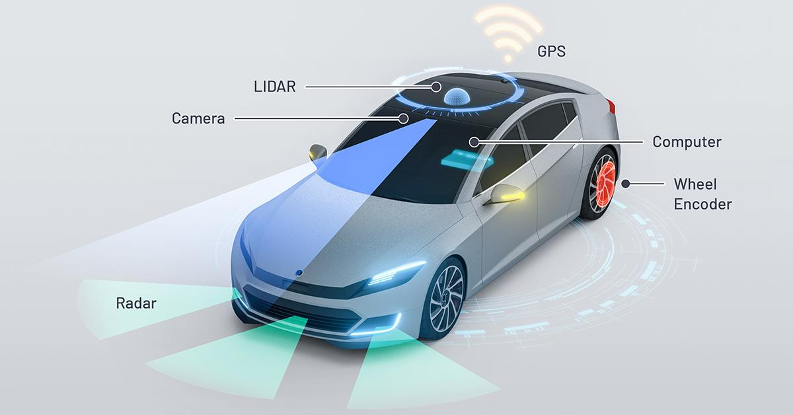

In class, this project is now built in Lecture 6, right after launch files. This page keeps the full notes, extra explanations and the challenges (crash-proof launch, two hunters, robotaxi) for practice and homework.
Every autonomous robot, from a vacuum cleaner to a self-driving car, repeats the same loop many times a second: sense the world, think about what to do, act. Today's game is that loop in its smallest form. Six small steps first, no code.
/turtle1/pose (turtlesim)/alive_turtles (your custom TurtleArray)Twist on /turtle1/cmd_vel/catch_turtle (your custom service)Twist on /cmd_velReplace "turtle" with "car" and the game is surprisingly close to a real robotaxi: a list of things to visit (passengers, parcels), a decision about which one first, and a controller that steers there.

| 🐢 Catch Them All | 🚕 Robotaxi | 📦 Warehouse robot | 🤖 LIMO (Lecture 8) | |
|---|---|---|---|---|
| Sense: where am I? | /turtle1/pose | GPS + LiDAR localisation | floor markers, LiDAR | /odom |
| Sense: what's out there? | /alive_turtles | ride requests | orders to pick | a goal you choose |
| Think: which first? | closest turtle (M5) | dispatcher: nearest passenger | shortest route | one goal at a time |
| Think: how to get there? | go-to-goal P-control | planner + controller | path planner | your go-to-goal |
| Act | Twist on cmd_vel | steering, throttle, brake | wheel speeds | Twist on /cmd_vel |
| "Done" message | /catch_turtle service | "passenger picked up" | "item picked" | goal reached |
Turtlesim has no physics, no noise and no crashes, so every bug you meet today is a software bug: wrong topic name, wrong type, a callback that never runs, an angle that isn't wrapped. Fix those here, where it's cheap. Next week the same code meets a real robot with wheels that slip.
Left: what you see in turtlesim. Right: what ROS 2 is doing. Every turtle that appears costs a /spawn request and response, plus an /alive_turtles update; every catch costs a /catch_turtle call and a /kill call. By the end of today you will have written all of it.
| Lecture | You learned… | …and here it is | Milestone |
|---|---|---|---|
| 2 · Nodes | a node class, timers, logging | turtle_controller and turtle_spawner, each with a timer | M1, M2 |
| 3 · Topics | publish, subscribe | /turtle1/pose, /turtle1/cmd_vel, /alive_turtles | M1, M3 |
| 4 · Services | async client, server, partial | calling /spawn and /kill; serving /catch_turtle | M2, M4 |
| 5 · Interfaces | your own .msg / .srv | Turtle.msg, TurtleArray.msg, CatchTurtle.srv | M3, M4 |
| 5 · Parameters | declare_parameter, YAML | spawn_frequency, catch_closest_turtle_first | M6 |
| 6 · Launch | one command, arguments | catch_them_all.launch.py | M6 |
| 6 · Toolkit | rqt_graph, logs, ros2 bag | inspect, record and replay a run | Lab |
Before you read the design in 7.1, decide for yourself. Rule of thumb from Lectures 3–5: a stream of data is a topic, a question with an answer is a service, a setting is a parameter.
In the simulator, how many messages does one caught turtle cost, from /spawn to its removal?
/alive_turtles; later /catch_turtle request, /kill request + response, the /catch_turtle response and another /alive_turtles: about 8, plus the continuous pose and velocity streams.Why is the list of alive turtles a topic and not a service?
Which node owns the list of alive turtles, and why that one?
Which part changes when the turtle becomes a LIMO next week?
/odom instead of /turtle1/pose and /cmd_vel instead of /turtle1/cmd_vel (plus quaternions instead of theta). The thinking, the go-to-goal maths, stays.Good robot engineers draw the graph before they write code. Changing a box on paper takes a second; changing three nodes takes an afternoon.
turtle1, drives to one of them by itself.Take 5 minutes with a neighbour: how many nodes? What does each one publish, subscribe to, serve and call? Draw it on paper, then open step 2.
| Node | Job | Publishes | Subscribes | Serves | Calls |
|---|---|---|---|---|---|
turtlesim_node | The simulator (exists) | /turtle1/pose | /turtle1/cmd_vel | /spawn, /kill | – |
turtle_spawner | Creates turtles; owns the list | /alive_turtles | – | /catch_turtle | /spawn, /kill |
turtle_controller | Chooses a target, drives, asks to catch | /turtle1/cmd_vel | /turtle1/pose, /alive_turtles | – | /catch_turtle |
/kill itself? Then the spawner's list would be wrong. The node that owns the data (the spawner) must be the one that changes it. The controller only asks.The standard turtlesim/msg/Pose, geometry_msgs/msg/Twist, turtlesim/srv/Spawn and turtlesim/srv/Kill already exist. Three things don't, so you design them:
string name
float64 x
float64 y
float64 thetaTurtle[] turtlesstring name
---
bool successturtlesim/msg/PoseTurtleArray.msggeometry_msgs/msg/TwistCatchTurtle.srvturtlesim/srv/Spawnturtlesim/srv/KillTurtle.msgNever write all the code and run it at the end. Each milestone adds one feature to a system that already works, and ends with a test you can see.
/spawn and /kill, owns and publishes /alive_turtles, serves /catch_turtle.cmd_vel, calls /catch_turtle.Turtle[] turtles: a custom message holding a list of custom messages.string name --- bool success.This is the brain of the hunter, and the most reused piece of code in the course: on the LIMO in Lecture 8, and inside every navigation stack in a more advanced form.
You do this every day without thinking. To walk to a door, you look at it (direction), turn until it's in front of you (angle error), and walk, faster when it's far and slower as you get close (distance). Two numbers, recomputed all the time: how far and how much to turn.
| Line | In words | Example: turtle (2, 2), θ = 0; target (5, 6) |
|---|---|---|
| 1–2 | How far right and up is the target? | dist_x = 3, dist_y = 4 |
| 3 | Pythagoras: the straight-line distance | distance = √(9 + 16) = 5 |
| 4 | The direction to the target, measured from the x-axis. atan2 (not atan) gets the quadrant right. | atan2(4, 3) = 0.93 rad (53°) |
| 5 | How much the turtle must turn: where it should look minus where it looks | diff = 0.93 − 0 = 0.93 rad |
| 6 | Speed proportional to distance: fast when far, gentle near the end | linear.x = 2 · 5 = 10 |
| 7 | Turn rate proportional to the angle error | angular.z = 6 · 0.93 = 5.6 |
"P" for proportional: the command is a gain times an error. Two errors (distance and angle), two gains (2 and 6). Cruise control, thermostats and drone stabilisers start with exactly this idea; better ones add I and D terms (a PID controller). In Lecture 8 you keep the P-controller and make it safe for a real robot.
The turtle looks at 170°, the target is at −170°. The real difference is only 20° to the left, but plain subtraction gives −340°: a full turn to the right. Wrapping diff into [−π, π] (−180° to 180°) fixes it.
if diff > math.pi: # the way used in this lecture: easy to read
diff -= 2 * math.pi
elif diff < -math.pi:
diff += 2 * math.pi
diff = math.atan2(math.sin(diff), math.cos(diff)) # one line, always correct| Kp linear / Kp angular | What you see | Why |
|---|---|---|
| 0.5 / 1 | Slow, wide curves; may miss the target and circle it | Turns too slowly to point at the target before it arrives |
| 2 / 6 | Turns quickly, drives smoothly, stops on the target | Turning is much faster than driving: the turtle faces the target early |
| 5 / 20 | Very fast, jerky turns, overshoots on the real robot | Large commands; a real motor can't follow them instantly |
| 5 / 2 | Big loops around the target | Drives fast while still pointing the wrong way |
linear.x = 2 · distance asks for 20 m/s when the target is 10 m away. Turtlesim obeys; a LIMO would be dangerous. In Lecture 8 you add speed limits with a clamp() and "turn first if the heading is badly off": the speed limiter idea from Lecture 5.
√(dist_x² + dist_y²): how far.goal_theta − theta, wrapped into [−π, π].distance < 0.5: close enough, stop and catch.✅ You have the design and the maths. Now build it, one milestone at a time: each one ends with something you can see working.
Goal: the hunter drives to (8, 4) by itself and stops there. No spawner yet: test the brain alone first.
cd ~/ros2_ws/src
ros2 pkg create turtlesim_catch_them_all --build-type ament_python \
--dependencies rclpy turtlesim geometry_msgs my_robot_interfaces
ros2 interface show turtlesim/msg/Pose
ros2 interface show geometry_msgs/msg/Twistfloat32 x float32 y float32 theta float32 linear_velocity float32 angular_velocity
A project gets its own package. --dependencies writes the four <depend> lines in package.xml for you.
#!/usr/bin/env python3
import math
import rclpy
from rclpy.node import Node
from turtlesim.msg import Pose
from geometry_msgs.msg import Twist
class TurtleControllerNode(Node):
def __init__(self):
super().__init__("turtle_controller")
self.target_x_ = 8.0
self.target_y_ = 4.0
self.pose_ = None
self.cmd_vel_publisher_ = self.create_publisher(Twist, "turtle1/cmd_vel", 10)
self.pose_subscriber_ = self.create_subscription(
Pose, "turtle1/pose", self.callback_turtle_pose, 10)
self.control_loop_timer_ = self.create_timer(0.01, self.control_loop)
def callback_turtle_pose(self, msg):
self.pose_ = msg
def control_loop(self):
if self.pose_ is None: # no pose received yet
return
dist_x = self.target_x_ - self.pose_.x
dist_y = self.target_y_ - self.pose_.y
distance = math.sqrt(dist_x * dist_x + dist_y * dist_y)
msg = Twist()
if distance > 0.5:
msg.linear.x = 2 * distance
goal_theta = math.atan2(dist_y, dist_x)
diff = goal_theta - self.pose_.theta
if diff > math.pi:
diff -= 2 * math.pi
elif diff < -math.pi:
diff += 2 * math.pi
msg.angular.z = 6 * diff
else:
msg.linear.x = 0.0
msg.angular.z = 0.0
self.cmd_vel_publisher_.publish(msg)
def main(args=None):
rclpy.init(args=args)
rclpy.spin(TurtleControllerNode())
rclpy.shutdown()
if __name__ == "__main__":
main()The pose callback only saves the latest pose. The timer makes the decision at a steady rate, whatever the sensor rate is. You'll use exactly this pattern on the LIMO with /odom instead of /turtle1/pose.
"turtle_controller = turtlesim_catch_them_all.turtle_controller:main",cd ~/ros2_ws && colcon build --packages-select turtlesim_catch_them_all --symlink-install && source ~/.bashrc
ros2 run turtlesim turtlesim_node
ros2 run turtlesim_catch_them_all turtle_controller✅ The turtle turns, drives to (8, 4) and stops. Experiment: change the gains 2 and 6 (0.5 and 1, then 5 and 20) and compare with the table in 7.2 step 5. Then try a target behind the turtle, (1, 5): does it turn the short way?
Goal: a node that calls turtlesim's /spawn service from a timer, exactly like the Lecture 4 client, so a new turtle appears every second.
/spawn from a timer (click the highlighted parts)ros2 service type /spawn
ros2 interface show turtlesim/srv/Spawnturtlesim/srv/Spawn float32 x float32 y float32 theta string name # Optional. A unique name will be created and returned if this is empty --- string name
#!/usr/bin/env python3
from functools import partial
import math
import random
import rclpy
from rclpy.node import Node
from turtlesim.srv import Spawn
class TurtleSpawnerNode(Node):
def __init__(self):
super().__init__("turtle_spawner")
self.turtle_name_prefix_ = "turtle"
self.turtle_counter_ = 1
self.spawn_client_ = self.create_client(Spawn, "spawn")
self.spawn_timer_ = self.create_timer(1.0, self.spawn_new_turtle)
def spawn_new_turtle(self):
if not self.spawn_client_.service_is_ready():
self.get_logger().warn("Waiting for turtlesim /spawn ...")
return
self.turtle_counter_ += 1
name = self.turtle_name_prefix_ + str(self.turtle_counter_)
x = random.uniform(0.5, 10.5)
y = random.uniform(0.5, 10.5)
theta = random.uniform(0.0, 2 * math.pi)
request = Spawn.Request()
request.x, request.y, request.theta, request.name = x, y, theta, name
future = self.spawn_client_.call_async(request)
future.add_done_callback(partial(self.callback_spawn, x=x, y=y, theta=theta))
def callback_spawn(self, future, x, y, theta):
try:
response = future.result()
if response.name != "":
self.get_logger().info("Turtle " + response.name + " is now alive")
except Exception as e:
self.get_logger().error(f"Service call failed {e!r}")
def main(args=None):
rclpy.init(args=args)
rclpy.spin(TurtleSpawnerNode())
rclpy.shutdown()
if __name__ == "__main__":
main()# "turtle_spawner = turtlesim_catch_them_all.turtle_spawner:main",
cd ~/ros2_ws && colcon build --packages-select turtlesim_catch_them_all --symlink-install && source ~/.bashrc
ros2 run turtlesim_catch_them_all turtle_spawner[INFO] [1730800000.101] [turtle_spawner]: Turtle turtle2 is now alive [INFO] [1730800001.100] [turtle_spawner]: Turtle turtle3 is now alive ...
Why does the counter start at 1? Change it to 0 and read turtlesim's terminal: "A turtle named [turtle1] already exists".
Goal: the spawner publishes the list of alive turtles on /alive_turtles; the controller chases the first one in the list.
rosidl_generate_interfaces(${PROJECT_NAME}
...
"msg/Turtle.msg"
"msg/TurtleArray.msg"
)cd ~/ros2_ws && colcon build --packages-select my_robot_interfaces && source ~/.bashrc
ros2 interface show my_robot_interfaces/msg/TurtleArrayTurtle[] turtles string name float64 x float64 y float64 theta
from my_robot_interfaces.msg import Turtle, TurtleArray
...
def __init__(self):
...
self.alive_turtles_ = []
self.alive_turtles_publisher_ = self.create_publisher(TurtleArray, "alive_turtles", 10)
def publish_alive_turtles(self):
msg = TurtleArray()
msg.turtles = self.alive_turtles_
self.alive_turtles_publisher_.publish(msg)
def callback_spawn(self, future, x, y, theta):
try:
response = future.result()
if response.name != "":
self.get_logger().info("Turtle " + response.name + " is now alive")
new_turtle = Turtle()
new_turtle.name = response.name
new_turtle.x, new_turtle.y, new_turtle.theta = x, y, theta
self.alive_turtles_.append(new_turtle)
self.publish_alive_turtles()
except Exception as e:
self.get_logger().error(f"Service call failed {e!r}")/alive_turtlesfrom my_robot_interfaces.msg import TurtleArray
...
def __init__(self):
super().__init__("turtle_controller")
self.turtle_to_catch_ = None # replaces target_x_ / target_y_
self.pose_ = None
...
self.alive_turtles_subscriber_ = self.create_subscription(
TurtleArray, "alive_turtles", self.callback_alive_turtles, 10)
def callback_alive_turtles(self, msg):
if len(msg.turtles) > 0:
self.turtle_to_catch_ = msg.turtles[0]
def control_loop(self):
if self.pose_ is None or self.turtle_to_catch_ is None:
return
dist_x = self.turtle_to_catch_.x - self.pose_.x
dist_y = self.turtle_to_catch_.y - self.pose_.y
... # the rest is unchangedAdd <depend>my_robot_interfaces</depend> to package.xml if it isn't there yet.
cd ~/ros2_ws && colcon build --symlink-install && source ~/.bashrc
ros2 run turtlesim turtlesim_node
ros2 run turtlesim_catch_them_all turtle_controller
ros2 run turtlesim_catch_them_all turtle_spawner✅ turtle1 drives to the first spawned turtle and stops on top of it, but doesn't catch it yet. Check with ros2 topic echo /alive_turtles: the list keeps growing.
Goal: when the hunter reaches its target, it calls /catch_turtle; the spawner removes the turtle from its list and calls turtlesim's /kill. Turtles disappear one after another.
string name
---
bool successAdd "srv/CatchTurtle.srv" to rosidl_generate_interfaces, rebuild the interfaces and check with ros2 interface show my_robot_interfaces/srv/CatchTurtle.
/catch_turtle and call turtlesim's /killfrom turtlesim.srv import Spawn, Kill
from my_robot_interfaces.srv import CatchTurtle
...
def __init__(self):
...
self.kill_client_ = self.create_client(Kill, "kill")
self.catch_turtle_service_ = self.create_service(
CatchTurtle, "catch_turtle", self.callback_catch_turtle)
def callback_catch_turtle(self, request, response):
if request.name not in [t.name for t in self.alive_turtles_]:
response.success = False
return response
self.alive_turtles_ = [t for t in self.alive_turtles_ if t.name != request.name]
self.publish_alive_turtles()
self.call_kill_server(request.name)
response.success = True
return response
def call_kill_server(self, turtle_name):
request = Kill.Request()
request.name = turtle_name
future = self.kill_client_.call_async(request)
future.add_done_callback(partial(self.callback_kill, turtle_name=turtle_name))
def callback_kill(self, future, turtle_name):
try:
future.result()
self.get_logger().info("Turtle " + turtle_name + " caught")
except Exception as e:
self.get_logger().error(f"Kill failed {e!r}")from functools import partial
from my_robot_interfaces.srv import CatchTurtle
...
def __init__(self):
...
self.catch_client_ = self.create_client(CatchTurtle, "catch_turtle")
def control_loop(self):
...
else:
msg.linear.x = 0.0
msg.angular.z = 0.0
self.call_catch_turtle_server(self.turtle_to_catch_.name)
self.turtle_to_catch_ = None
self.cmd_vel_publisher_.publish(msg)
def call_catch_turtle_server(self, turtle_name):
if not self.catch_client_.service_is_ready():
self.get_logger().warn("catch_turtle service not available")
return
request = CatchTurtle.Request()
request.name = turtle_name
future = self.catch_client_.call_async(request)
future.add_done_callback(partial(self.callback_catch, turtle_name=turtle_name))
def callback_catch(self, future, turtle_name):
try:
if not future.result().success:
self.get_logger().warn("Turtle " + turtle_name + " could not be caught")
except Exception as e:
self.get_logger().error(f"Service call failed {e!r}")cd ~/ros2_ws && colcon build --symlink-install && source ~/.bashrc✅ turtle1 now eats each turtle and goes to the next one. You have a working autonomous system. Look at it in rqt_graph and compare with your drawing from 7.1.
distance < 0.5/catch_turtle with the name/alive_turtles/killsuccess: TrueGoal: the hunter picks the nearest turtle, like a robotaxi dispatcher picking the nearest passenger.
def callback_alive_turtles(self, msg):
if len(msg.turtles) == 0 or self.pose_ is None:
return
if self.catch_closest_turtle_first_:
closest_turtle = None
closest_distance = None
for turtle in msg.turtles:
dist_x = turtle.x - self.pose_.x
dist_y = turtle.y - self.pose_.y
distance = math.sqrt(dist_x * dist_x + dist_y * dist_y)
if closest_turtle is None or distance < closest_distance:
closest_turtle = turtle
closest_distance = distance
self.turtle_to_catch_ = closest_turtle
else:
self.turtle_to_catch_ = msg.turtles[0]Add self.catch_closest_turtle_first_ = True in __init__ (it becomes a parameter in M6). Then count how many turtles are caught in one minute, with and without it. The simulator in 7.2 step 4 has the same switch.
"Closest first" is a greedy strategy: good, not optimal. Delivery companies solve the full "best order to visit everyone" problem (the Travelling Salesman Problem) with much more maths. For a robot that must also react to new turtles, greedy is a sensible start.
Goal: ros2 launch my_robot_bringup catch_them_all.launch.py starts all three nodes with settings from a YAML file, and closest:=false changes the strategy without editing code.
self.declare_parameter("spawn_frequency", 1.0)
self.declare_parameter("turtle_name_prefix", "turtle")
self.spawn_frequency_ = self.get_parameter("spawn_frequency").value
self.turtle_name_prefix_ = self.get_parameter("turtle_name_prefix").value
...
self.spawn_timer_ = self.create_timer(1.0 / self.spawn_frequency_, self.spawn_new_turtle) self.declare_parameter("catch_closest_turtle_first", True)
self.catch_closest_turtle_first_ = self.get_parameter("catch_closest_turtle_first").value/turtle_spawner:
ros__parameters:
spawn_frequency: 1.5
turtle_name_prefix: "my_turtle"
/turtle_controller:
ros__parameters:
catch_closest_turtle_first: trueimport os
from ament_index_python.packages import get_package_share_directory
from launch import LaunchDescription
from launch.actions import DeclareLaunchArgument
from launch.substitutions import LaunchConfiguration
from launch_ros.actions import Node
def generate_launch_description():
param_file = os.path.join(
get_package_share_directory("my_robot_bringup"), "config", "catch_them_all.yaml")
return LaunchDescription([
DeclareLaunchArgument("closest", default_value="true",
description="Chase the closest turtle first"),
Node(package="turtlesim", executable="turtlesim_node"),
Node(package="turtlesim_catch_them_all", executable="turtle_spawner",
parameters=[param_file]),
Node(package="turtlesim_catch_them_all", executable="turtle_controller",
parameters=[param_file,
{"catch_closest_turtle_first": LaunchConfiguration("closest")}]),
]) <exec_depend>turtlesim</exec_depend>
<exec_depend>turtlesim_catch_them_all</exec_depend>cd ~/ros2_ws && colcon build --symlink-install && source ~/.bashrc
ros2 launch my_robot_bringup catch_them_all.launch.py
ros2 launch my_robot_bringup catch_them_all.launch.py closest:=false✅ One command, three nodes; turtles are now called my_turtle2, my_turtle3, …, 1.5 per second. With the new prefix there is no name clash any more, so the counter could start at 0.
#!/usr/bin/env python3
from functools import partial
import math
import rclpy
from rclpy.node import Node
from turtlesim.msg import Pose
from geometry_msgs.msg import Twist
from my_robot_interfaces.msg import TurtleArray
from my_robot_interfaces.srv import CatchTurtle
class TurtleControllerNode(Node):
def __init__(self):
super().__init__("turtle_controller")
self.declare_parameter("catch_closest_turtle_first", True)
self.catch_closest_turtle_first_ = self.get_parameter("catch_closest_turtle_first").value
self.turtle_to_catch_ = None
self.pose_ = None
self.cmd_vel_publisher_ = self.create_publisher(Twist, "turtle1/cmd_vel", 10)
self.pose_subscriber_ = self.create_subscription(
Pose, "turtle1/pose", self.callback_turtle_pose, 10)
self.alive_turtles_subscriber_ = self.create_subscription(
TurtleArray, "alive_turtles", self.callback_alive_turtles, 10)
self.catch_client_ = self.create_client(CatchTurtle, "catch_turtle")
self.control_loop_timer_ = self.create_timer(0.01, self.control_loop)
def callback_turtle_pose(self, msg):
self.pose_ = msg
def callback_alive_turtles(self, msg):
if len(msg.turtles) == 0 or self.pose_ is None:
return
if self.catch_closest_turtle_first_:
closest_turtle = None
closest_distance = None
for turtle in msg.turtles:
dist_x = turtle.x - self.pose_.x
dist_y = turtle.y - self.pose_.y
distance = math.sqrt(dist_x * dist_x + dist_y * dist_y)
if closest_turtle is None or distance < closest_distance:
closest_turtle = turtle
closest_distance = distance
self.turtle_to_catch_ = closest_turtle
else:
self.turtle_to_catch_ = msg.turtles[0]
def control_loop(self):
if self.pose_ is None or self.turtle_to_catch_ is None:
return
dist_x = self.turtle_to_catch_.x - self.pose_.x
dist_y = self.turtle_to_catch_.y - self.pose_.y
distance = math.sqrt(dist_x * dist_x + dist_y * dist_y)
msg = Twist()
if distance > 0.5:
msg.linear.x = 2 * distance
goal_theta = math.atan2(dist_y, dist_x)
diff = goal_theta - self.pose_.theta
if diff > math.pi:
diff -= 2 * math.pi
elif diff < -math.pi:
diff += 2 * math.pi
msg.angular.z = 6 * diff
else:
msg.linear.x = 0.0
msg.angular.z = 0.0
self.call_catch_turtle_server(self.turtle_to_catch_.name)
self.turtle_to_catch_ = None
self.cmd_vel_publisher_.publish(msg)
def call_catch_turtle_server(self, turtle_name):
if not self.catch_client_.service_is_ready():
self.get_logger().warn("catch_turtle service not available")
return
request = CatchTurtle.Request()
request.name = turtle_name
future = self.catch_client_.call_async(request)
future.add_done_callback(partial(self.callback_catch, turtle_name=turtle_name))
def callback_catch(self, future, turtle_name):
try:
if not future.result().success:
self.get_logger().warn("Turtle " + turtle_name + " could not be caught")
except Exception as e:
self.get_logger().error(f"Service call failed {e!r}")
def main(args=None):
rclpy.init(args=args)
rclpy.spin(TurtleControllerNode())
rclpy.shutdown()
if __name__ == "__main__":
main()#!/usr/bin/env python3
from functools import partial
import math
import random
import rclpy
from rclpy.node import Node
from turtlesim.srv import Spawn, Kill
from my_robot_interfaces.msg import Turtle, TurtleArray
from my_robot_interfaces.srv import CatchTurtle
class TurtleSpawnerNode(Node):
def __init__(self):
super().__init__("turtle_spawner")
self.declare_parameter("spawn_frequency", 1.0)
self.declare_parameter("turtle_name_prefix", "turtle")
self.spawn_frequency_ = self.get_parameter("spawn_frequency").value
self.turtle_name_prefix_ = self.get_parameter("turtle_name_prefix").value
self.turtle_counter_ = 1
self.alive_turtles_ = []
self.spawn_client_ = self.create_client(Spawn, "spawn")
self.kill_client_ = self.create_client(Kill, "kill")
self.alive_turtles_publisher_ = self.create_publisher(TurtleArray, "alive_turtles", 10)
self.catch_turtle_service_ = self.create_service(
CatchTurtle, "catch_turtle", self.callback_catch_turtle)
self.spawn_timer_ = self.create_timer(1.0 / self.spawn_frequency_, self.spawn_new_turtle)
def callback_catch_turtle(self, request, response):
if request.name not in [t.name for t in self.alive_turtles_]:
response.success = False
return response
self.alive_turtles_ = [t for t in self.alive_turtles_ if t.name != request.name]
self.publish_alive_turtles()
self.call_kill_server(request.name)
response.success = True
return response
def publish_alive_turtles(self):
msg = TurtleArray()
msg.turtles = self.alive_turtles_
self.alive_turtles_publisher_.publish(msg)
def spawn_new_turtle(self):
if not self.spawn_client_.service_is_ready():
self.get_logger().warn("Waiting for turtlesim /spawn ...")
return
self.turtle_counter_ += 1
name = self.turtle_name_prefix_ + str(self.turtle_counter_)
x = random.uniform(0.5, 10.5)
y = random.uniform(0.5, 10.5)
theta = random.uniform(0.0, 2 * math.pi)
request = Spawn.Request()
request.x, request.y, request.theta, request.name = x, y, theta, name
future = self.spawn_client_.call_async(request)
future.add_done_callback(partial(self.callback_spawn, x=x, y=y, theta=theta))
def callback_spawn(self, future, x, y, theta):
try:
response = future.result()
if response.name != "":
self.get_logger().info("Turtle " + response.name + " is now alive")
new_turtle = Turtle()
new_turtle.name = response.name
new_turtle.x, new_turtle.y, new_turtle.theta = x, y, theta
self.alive_turtles_.append(new_turtle)
self.publish_alive_turtles()
except Exception as e:
self.get_logger().error(f"Service call failed {e!r}")
def call_kill_server(self, turtle_name):
request = Kill.Request()
request.name = turtle_name
future = self.kill_client_.call_async(request)
future.add_done_callback(partial(self.callback_kill, turtle_name=turtle_name))
def callback_kill(self, future, turtle_name):
try:
future.result()
self.get_logger().info("Turtle " + turtle_name + " caught")
except Exception as e:
self.get_logger().error(f"Kill failed {e!r}")
def main(args=None):
rclpy.init(args=args)
rclpy.spin(TurtleSpawnerNode())
rclpy.shutdown()
if __name__ == "__main__":
main()Goal: check the running system with the Lecture 3–6 tools, catch a turtle by hand, then record a run with ros2 bag and replay it without the nodes.
Start the game with the launch file from M6, then in a second terminal:
rqt_graph # compare with your drawing from 7.1
ros2 topic hz /turtle1/pose # ≈ 62 Hz
ros2 topic echo /alive_turtles --once # the current list, once
ros2 node info /turtle_spawner # publishers, subscribers, servers, clients
ros2 run rqt_plot rqt_plot /turtle1/pose/x /turtle1/pose/yPick a name from /alive_turtles and call your own service from the terminal:
ros2 service call /catch_turtle my_robot_interfaces/srv/CatchTurtle "{name: 'my_turtle5'}"
ros2 service call /catch_turtle my_robot_interfaces/srv/CatchTurtle "{name: 'my_turtle5'}"response: my_robot_interfaces.srv.CatchTurtle_Response(success=True) ... response: my_robot_interfaces.srv.CatchTurtle_Response(success=False)
The turtle disappears even though the hunter never touched it, and the second call is refused. Testing a service by hand, without the client node, is how you debug one side of a connection at a time.
ros2 run my_py_pkg number_publishermkdir -p ~/bags && cd ~/bags
ros2 bag record /number -o test
ros2 bag info testStorage id: sqlite3 Duration: 10.2s Messages: 20 Topic information: Topic: /number | Type: example_interfaces/msg/Int64 | Count: 20 | Serialization Format: cdr
Stop number_publisher. Then replay, and listen:
ros2 bag play ~/bags/test # at normal speed
ros2 bag play ~/bags/test --rate 4.0 # four times faster
ros2 bag play ~/bags/test --loop # forever, until Ctrl+C
ros2 topic echo /numberThe data comes back as if the node were running.
cd ~/bags
ros2 bag record /turtle1/cmd_vel /turtle1/pose /alive_turtles -o catch_runros2 run turtlesim turtlesim_node
ros2 bag play ~/bags/catch_run --topics /turtle1/cmd_velturtle1 repeats the same moves, "hunting" turtles that are not there. That's the power of bags: the same inputs, replayed exactly. Self-driving teams record every test drive and replay it into new versions of their software every night.
ros2 bag record -a records all topics. Great for short tests; on a real robot with cameras it fills the disk quickly, so list the topics you need.
Replace the numbers 2, 6 and 0.5 in the controller with parameters kp_linear, kp_angular and catch_distance, and add a parameter callback (Lecture 5, Lab 7) so that ros2 param set /turtle_controller kp_angular 1.0 changes the behaviour immediately. Refuse negative values.
from rcl_interfaces.msg import SetParametersResult, then self.add_on_set_parameters_callback(self.callback_parameters). In the callback, loop over the parameters, check param.value >= 0.0, store the new values, and return SetParametersResult(successful=True).from rcl_interfaces.msg import SetParametersResult
...
self.declare_parameter("kp_linear", 2.0)
self.declare_parameter("kp_angular", 6.0)
self.declare_parameter("catch_distance", 0.5)
self.kp_linear_ = self.get_parameter("kp_linear").value
self.kp_angular_ = self.get_parameter("kp_angular").value
self.catch_distance_ = self.get_parameter("catch_distance").value
self.add_on_set_parameters_callback(self.callback_parameters)
def callback_parameters(self, params):
for param in params:
if param.name in ("kp_linear", "kp_angular", "catch_distance"):
if param.value < 0.0:
return SetParametersResult(successful=False,
reason=param.name + " must be >= 0")
for param in params:
if param.name == "kp_linear":
self.kp_linear_ = param.value
elif param.name == "kp_angular":
self.kp_angular_ = param.value
elif param.name == "catch_distance":
self.catch_distance_ = param.value
return SetParametersResult(successful=True)
# in control_loop: use self.kp_linear_, self.kp_angular_, self.catch_distance_ros2 param set /turtle_controller kp_angular 1.0 # wide, lazy curves
ros2 param set /turtle_controller kp_angular 15.0 # snappy
ros2 param set /turtle_controller kp_linear -1.0 # refusedImprove catch_them_all.launch.py with what you learned in Lecture 6: an argument spawn_frequency that is passed to the spawner; the controller starts 2 s after the others; closing the turtlesim window stops everything; and with record:=true the launch also records a bag of the run.
TimerAction, RegisterEventHandler(OnProcessExit(…)) with EmitEvent(event=Shutdown()), and ExecuteProcess(cmd=["ros2", "bag", "record", …], condition=IfCondition(LaunchConfiguration("record"))). A dictionary after the YAML file overrides it.import os
from ament_index_python.packages import get_package_share_directory
from launch import LaunchDescription
from launch.actions import (DeclareLaunchArgument, EmitEvent, ExecuteProcess,
RegisterEventHandler, TimerAction)
from launch.conditions import IfCondition
from launch.event_handlers import OnProcessExit
from launch.events import Shutdown
from launch.substitutions import LaunchConfiguration
from launch_ros.actions import Node
def generate_launch_description():
param_file = os.path.join(
get_package_share_directory("my_robot_bringup"), "config", "catch_them_all.yaml")
turtlesim_node = Node(package="turtlesim", executable="turtlesim_node")
spawner_node = Node(
package="turtlesim_catch_them_all", executable="turtle_spawner",
parameters=[param_file,
{"spawn_frequency": LaunchConfiguration("spawn_frequency")}])
controller_node = Node(
package="turtlesim_catch_them_all", executable="turtle_controller",
parameters=[param_file,
{"catch_closest_turtle_first": LaunchConfiguration("closest")}])
record_bag = ExecuteProcess(
cmd=["ros2", "bag", "record", "/turtle1/pose", "/turtle1/cmd_vel",
"/alive_turtles"],
condition=IfCondition(LaunchConfiguration("record")), output="screen")
return LaunchDescription([
DeclareLaunchArgument("closest", default_value="true"),
DeclareLaunchArgument("spawn_frequency", default_value="1.5",
description="Turtles per second (a float)"),
DeclareLaunchArgument("record", default_value="false"),
turtlesim_node,
spawner_node,
TimerAction(period=2.0, actions=[controller_node]),
record_bag,
RegisterEventHandler(OnProcessExit(
target_action=turtlesim_node,
on_exit=[EmitEvent(event=Shutdown(reason="turtlesim closed"))])),
])ros2 launch my_robot_bringup catch_them_all.launch.py spawn_frequency:=3.0 record:=trueThe bag is written to a folder rosbag2_<date>_<time> in the directory you launched from. Close the turtlesim window: everything, including the recording, stops cleanly.
Add a second hunter, hunter2, and let the two compete for the same turtles. Give the controller a parameter hunter_name (default "turtle1") and build its topic names from it. Start hunter2 with a /spawn call from the launch file, and run two controllers. The spawner from M4 already refuses a turtle that's been caught, so the slower hunter gets success: False. Bonus: each controller logs its score.
hunter = self.get_parameter("hunter_name").value, then hunter + "/cmd_vel" and hunter + "/pose". In the launch file: an ExecuteProcess calling ros2 service call /spawn turtlesim/srv/Spawn "{x: 2.0, y: 9.0, theta: 0.0, name: 'hunter2'}", started by OnProcessStart of turtlesim (Lecture 6, Lab 6), and a second controller Node(…, name="turtle_controller_2", parameters=[{"hunter_name": "hunter2"}]). Each controller must ignore its rival: the spawner never lists the hunters, so that's automatic.Turn the game into a robotaxi: turtles are passengers. Change the spawner's prefix to passenger, give each Turtle a waiting time (add float64 waiting_s to Turtle.msg and update it every second), and make the controller pick the passenger with the best score = waiting_s − 2 · distance instead of the closest. Compare the average waiting time with "closest first". Real ride-hailing dispatchers balance exactly these two numbers.
The turtle is at (2, 2), the target at (5, 6). What is the distance?
What does atan2(dist_y, dist_x) return?
Heading 170°, goal −170°, no wrapping. What does the turtle do?
Why does the pose callback only store the pose?
Why does the spawner counter start at 1?
Why does the controller call /catch_turtle instead of /kill?
Why is the response from /spawn handled in callback_spawn and not right after call_async?
The controller sends /catch_turtle for a turtle that's already gone. With the M4 server, what happens?
In the launch file, parameters=[param_file, {"catch_closest_turtle_first": closest}]. Which value wins?
What does ros2 bag play --topics /turtle1/cmd_vel do?
| You see… | Why | Fix |
|---|---|---|
| The hunter doesn't move at all | No pose yet (self.pose_ is None), no target, or a wrong topic name. | ros2 topic info /turtle1/cmd_vel should show 1 publisher; rqt_graph. |
| The hunter spins around the target forever | kp_angular too small for the speed, or the stop distance too small. | Raise kp_angular (6); keep distance > 0.5. |
| It turns the long way round | diff isn't wrapped into [−π, π]. | Add the wrap (7.2 step 3). |
A turtle named [turtle1] already exists | The spawner's counter starts at 0. | Start it at 1, or use another prefix. |
Waiting for turtlesim /spawn ... forever | turtlesim isn't running, or a different ROS_DOMAIN_ID. | Start turtlesim; check ros2 service list. |
cannot import name 'TurtleArray' | Not in rosidl_generate_interfaces, or not rebuilt/sourced. | Add it, rebuild my_robot_interfaces, source ~/.bashrc. |
| The hunter stops on a turtle that doesn't disappear | The controller has no /catch_turtle client yet (M3), or the service name differs. | ros2 service list | grep catch; same name in both nodes. |
Kill failed … turtle not found | The same turtle was killed twice. | Check the name in callback_catch_turtle and remove it before calling /kill (M4). |
| The hunter keeps chasing a turtle that's gone | The controller kept an old target, or the spawner didn't publish the new list. | Set turtle_to_catch_ = None after calling catch; publish after every change. |
| Parameters in the YAML file are ignored | The YAML key doesn't match the node name. | /turtle_spawner: and /turtle_controller:, with ros__parameters. |
Five quick questions (5 min), then the rubric, today's commands and homework.
Why does callback_turtle_pose only store the pose instead of computing the command?
Why wrap diff into [−π, π]?
Why is /catch_turtle a service and /alive_turtles a topic?
Name the three parts of the sense–think–act loop in the controller, with their ROS 2 pieces.
/turtle1/pose and /alive_turtles. Think: the control-loop timer (target choice + go-to-goal maths). Act: publishing Twist on /turtle1/cmd_vel and calling /catch_turtle.Which two topic names change when the controller drives the LIMO next week?
/turtle1/pose → /odom (with a quaternion instead of theta), and /turtle1/cmd_vel → /cmd_vel.| Criterion | Marks |
|---|---|
| M1: controller reaches a fixed goal and stops; angle wrapped | 3 |
M2–M3: spawner + /alive_turtles with custom messages | 4 |
| M4: catching works through a custom service that checks its request | 5 |
| M5: closest-turtle strategy | 2 |
| M6: parameters, YAML file and one-command launch with an argument | 3 |
Evidence: rqt_graph screenshot + a bag of a run + clean, commented code | 3 |
Bonus (up to +3): Challenge 7.1, 7.2 or 7.3.
distance = math.sqrt(dx*dx + dy*dy)how fargoal_theta = math.atan2(dy, dx)which directiondiff = math.atan2(math.sin(d), math.cos(d))wrap an angle into [−π, π]linear.x = kp_l·distance · angular.z = kp_a·diffP-controlcallback stores · timer actsthe control-loop patterncall_async(req).add_done_callback(partial(cb, …))async service call with extra dataros2 service call /catch_turtle my_robot_interfaces/srv/CatchTurtle "{name: 'x'}"test a server by handros2 topic echo /alive_turtles --onceone message, then exitros2 run rqt_plot rqt_plot /turtle1/pose/xplot a field liveros2 bag record T1 T2 -o name · -arecord topicsros2 bag info name · play name --rate 2 --loop --topics Tinspect and replayros2 launch my_robot_bringup catch_them_all.launch.py closest:=falsethe whole gameNodes, topics, services, actions, interfaces, parameters, launch files, QoS and bags: this is most of what every ROS 2 robot uses. In Part B we apply it all to a real robot, the AgileX LIMO. Your go-to-goal controller moves over almost unchanged; only the topic names, the units and the safety limits are new.
rqt_graph, a bag of a successful run, your code).ros2 launch limo_gazebosim limo_gazebo_diff.launch.py, then ros2 topic echo /odom --once. Find the robot's x, y and the orientation. Why is there no theta?/spawn and /kill services)atan